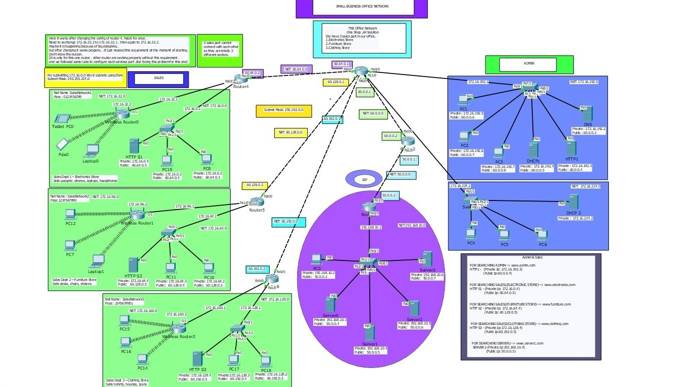
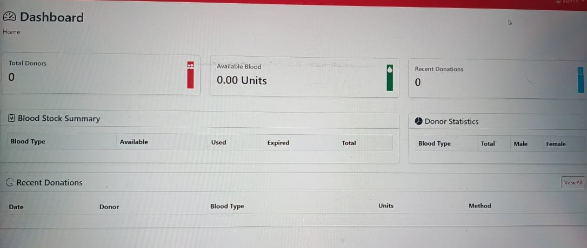
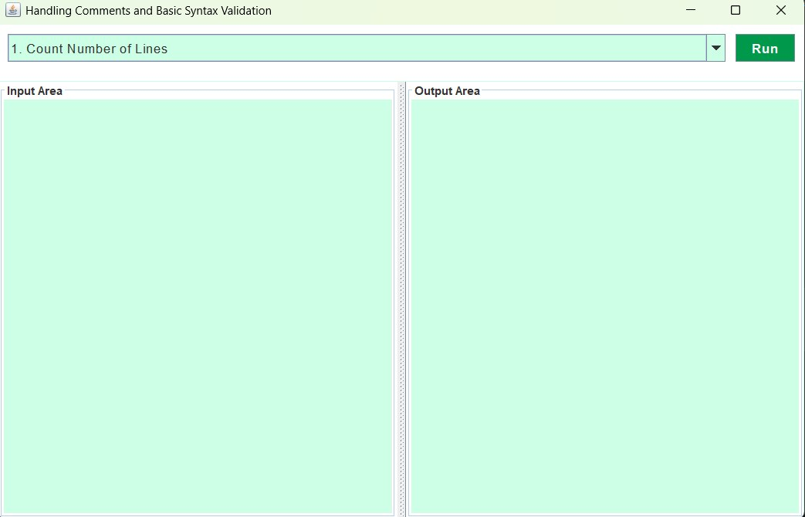

Branch POS
Local database↔HQ service
Central database
Local database↔HQ service
Central database
Software architecture · 2026
PharmaSync
Offline-first inventory and POS for pharmacy chains.
Tools: Java, Maven, H2, PostgreSQL
ACADEMIC WORK
Projects from my coursework in software, networking and databases.
Explore the details of each academic project.
Software architecture · 2026
Offline-first inventory and POS for pharmacy chains.
Tools: Java, Maven, H2, PostgreSQL

Computer Networks Lab · Group project · 2025
A simulated office network designed to demonstrate subnetting, DHCP, DNS and NAT using Cisco Packet Tracer.
Tools: Cisco Packet Tracer, TCP/IP, DHCP, DNS, NAT

Database and web development · 2025
A database-driven application for managing blood inventory, donor information and donation records.
Tools: PHP, MySQL, HTML, CSS, Bootstrap

Compiler Design Lab · Group project
A Java-based educational application for handling source code comments and basic syntax validation.
Tools: Java, Swing